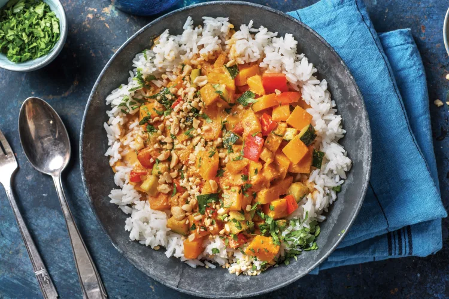

Thai Pumpkin & Veggie Curry

Description
You'll have no problems getting your veggies in with this creamy, cracking curry.
The only way to improve it? Crushed peanuts for some crunch. Tick!
Ingridients
- Pumpkin (Peeled & chopped)
- Jasmine rice (1 packet)
- 1 Zucchini
- 1 Capsicum
- Garlic (2 cloves)
- Vegetable stock powder (1/2 sachet)
- Coconut milk (1 can)
- Coriander (1 bag)
- Crushed peanuts
- Olive oil
- Thai red curry paste (1 tbsp)
- 1.25 cups water
- Soy sauce (1 tbsp)
Steps
-
- Preheat the oven to 220°C/200°C fan-forced.
- Place the peeled & chopped pumpkin on a lined oven tray. Drizzle with olive oil, season with salt and pepper and toss to coat.
- Spread out evenly and roast until tender, 20-25 minutes.
-
- While the pumpkin is roasting, add the water to a medium saucepan and bring to boil.
- Add the jasmine rice, stir, cover with a lid and reduce the heat to low.
- Cook for 12 minutes, then remove the pan from the heat and keep covered until the rice is tender and all the water is absorbed, 10-15 minutes.
-
- Cut the zucchini and capsicum into small chunks. Finely chop the garlic.
-
- In a large frying pan, heat a drizzle of olive oil over a medium high heat.
- Cook the zucchini and capsicum until slightly softened, 5-6 minutes.
- Add the Thai red curry paste (see ingredients) and garlic and cook until fragrant, 1-2 minutes.
-
- Add the coconut milk and vegetable stock powder (see ingredients).
- Bring to the boil over a high heat, then reduce the heat to medium and cover with a lid or foil.
- Simmer until slightly thickened, 3 minutes. Stir in the soy sauce and roasted pumpkin, then remove from the heat.
-
- Roughly chop the coriander.
- Divide the rice between bowls and top with the Thai pumpkin and veggie red curry.
- Serve sprinkled with the crushed peanuts and coriander.
- Enjoy!